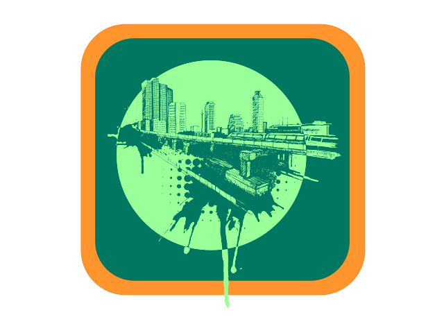

Townie
Draw anonomously! We'll geotag your drawing so you can see others in your area.
Bars, parks, even in your own home; Be a Townie.
Click the Arrow or Scroll to draw your own
Save Drawing
Paint us a pretty picture. When you're done, hit Save Drawing. We'll geotag it and add it to your city's collection!
Gallery
Click on an entry to view the piece!
Click on a pin to see drawings in your town.
Last 3 Days
Past Week
Past Month